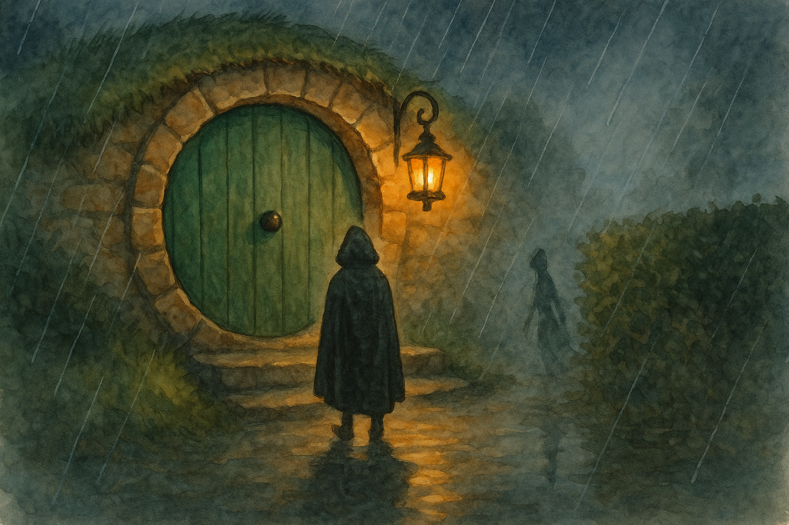

Fourth Age, in Buckland when the Brandywine fog creeps up like a cat and even lantern-light seems to listen
Buckland is a place where folk remember there is such a thing as a world beyond fences. The river is near, and the marshy smells come and go with the wind, and now and again the fog rolls in thick enough to make a hobbit feel as if his own front door is the last steady thing left in Middle Earth.
It was on such a foggy evening that my cousin Doderic Brandybuck (a careful hobbit with a careful gait and a careful opinion of strangers) told me about the doorstep with two shadows.
“You will laugh,” he said — which is what hobbits say when they do not want you to laugh at all. “But I saw it with my own eyes, and I was sober besides.”
We were sitting by his hearth, where the fire was behaving itself and the kettle made quiet, sensible noises. Outside, rain tapped at the round window as politely as any visitor, and the wind in the hedge sounded like someone trying to remember a tune.
“Go on,” I said, and reached for another honey-cake, for I have always found that stories do better when one’s hands are occupied.
Doderic cleared his throat. “There was a knock,” he began, “not loud, not soft. The sort of knock that says: I am here, and I would rather not be.”
He had been alone, he said, for his wife was visiting her sister and the children were at the neighbours’ for a singing. The evening had gone the way good evenings ought: supper, a bit of mending, a glance at the weather, and then a book half-read with a dog asleep at his feet.
“I nearly didn’t answer,” Doderic admitted. “That is the plain truth. There was fog. There was rain. And I had just found the chapter where the hero is about to do something foolish.”
But he did answer, because hobbits are stubborn in their kindness even when they pretend they are not. He took the brass lantern from its hook — the one with a shutter that can be narrowed down to a mere slit — and he unlatched the door a cautious inch.
On the step stood a traveller, hood up, cloak dripping. No wagon, no pony. Just a muddy hem and boots that had known too many miles. The traveller’s hands were empty, held slightly away from his body, palms forward in the manner of someone who has learned that emptiness is sometimes the best proof of peace.
“Good evening,” the traveller said, and his voice was weary but steady. “I have lost the road in your fog. Might I trouble you for a moment’s light — only enough to find the lane again?”
Now, Bucklanders have rules about the Brandywine and the Old Forest, and another set of rules about strangers, and a third set about breaking the first two when conscience pinches. Doderic felt that pinch, and he did what he always does when unsure: he looked down at the step, so he could think without being watched too closely.
That was when he saw the shadows.
The lantern made a long, neat shadow of the traveller, stretched across the wet stone like a dark ribbon. But beside it — not attached to anything Doderic could see — lay a second shadow, thinner and lower, slipping along the hedge as if it were trying to keep its feet dry.
“Perhaps it was only the leaves,” Doderic said to me, though his eyes did not believe his own words. “Perhaps it was only the rain.”
“Was it?” I asked.
He shook his head once, as if to loosen a thought from his skull. “No. Leaves do not move against the wind, and rain does not lean.”
The traveller, seeing Doderic’s hesitation, did not press. He stood very still. He did not glance toward the hedge. Yet his shoulders went tight, the way a dog’s do when it smells a fox.
“There is something behind me,” the traveller said quietly.
Doderic swallowed. “Aye.”
“Do you have tea?” the traveller asked.
It was such a hobbitish question, so wrong for a night like that, that Doderic nearly laughed. Nearly. But it did a better thing: it made him remember he was standing at his own door, with his own hearth behind him. And it is hard for fear to keep its grip when a kettle is waiting to be useful.
“I do,” Doderic said. “And I have a fire. And if you mean to stand on my doorstep with rain running down your neck, you may as well come in.”
He opened the door wider — not flung, mind you, but opened, with decision — and the warm lamplight fell out into the fog like a hand offered.
The traveller stepped forward, and at that instant the second shadow on the hedge stretched long, as if it meant to follow.
Doderic did not shout. He did not wave the lantern about like a beacon. He did a small, sensible thing.
He turned the lantern’s shutter so that the light narrowed to a sharp blade, and he aimed it — not at the traveller — but at the hedge.
The thin shadow recoiled.
It did not vanish like smoke. It pulled back as a hand pulls back from a hot pan — quick, startled, offended. And in that brief moment Doderic saw, among the wet leaves, a pale glimmer like an eye that had forgotten it was meant to look ordinary.
The dog, who had padded up behind Doderic (for dogs know about uninvited things), gave a low growl that never rose into a bark. The sound was not loud, but it was honest. The second shadow slid away along the hedge and was gone.
Then the lantern-light widened again, warm and round, and the world became a world one could live in.
Inside, Doderic set the traveller by the hearth. He poured tea with hands that shook only a little. The traveller drank as if the cup were a miracle.
“Thank you,” the traveller said at last. “For the light, and for the latch.”
“For the latch?” Doderic asked, though he knew what was meant.
The traveller nodded once. “Some folk keep their doors shut like fists,” he said. “Others keep them shut like shields. Tonight you opened yours like a hand. It makes a difference.”
“What was it?” Doderic whispered.
“A hungry thought,” the traveller answered. “Or something that wears one. Better not to offer it more attention than it has earned.”
Doderic sat back and stared into his tea as if it contained a map. After a while he said, “You asked if I had tea.”
The traveller’s mouth twitched, almost a smile. “I did.”
“Why?”
“Because tea,” the traveller said, “is a kind of promise. It says: we will be warm for a little while. We will be civil. We will not be eaten in the dark.”
They talked until the rain eased, and the fog thinned enough to show the hedge again — only leaves, only wet, only the ordinary world behaving as it should. Doderic walked the traveller to the lane with the lantern held low, its shutter half-closed.
At the gate the traveller paused. “If you see two shadows again,” he said, “do not make your light brighter. Make it truer. Brightness calls. True light shows.”
Then he was gone into the mist, and Doderic returned to his doorstep and stood there for a moment, listening.
“And what did you do then?” I asked, leaning in despite myself.
Doderic gave me a look that was equal parts shame and pride. “I made more tea,” he said. “In case anyone else knocked.”
I laughed then, because it was safe to laugh by a hearth that had done its duty.
But afterward — later, when I walked home under hedges that whispered with rain — I carried my own lantern a little lower, and I thought about the things a hobbit can do against dark: not great deeds, perhaps, but small steadfast ones. A shutter turned to a truer light. A latch opened like a hand. And tea, poured even when the world outside is full of hungry thoughts.
— Bilbo